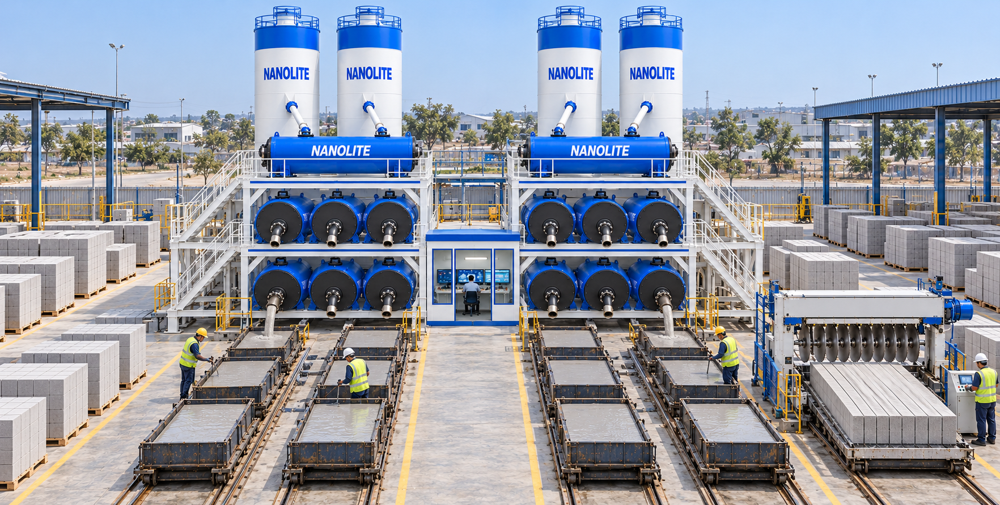
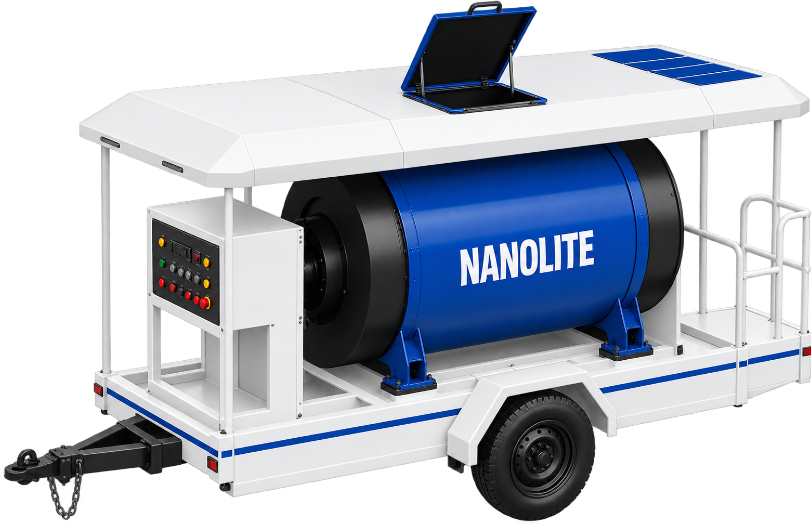
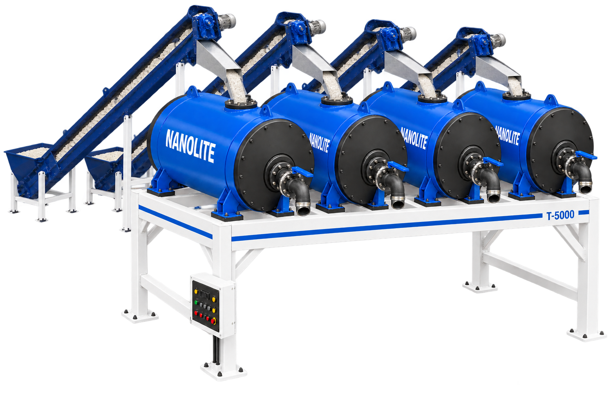
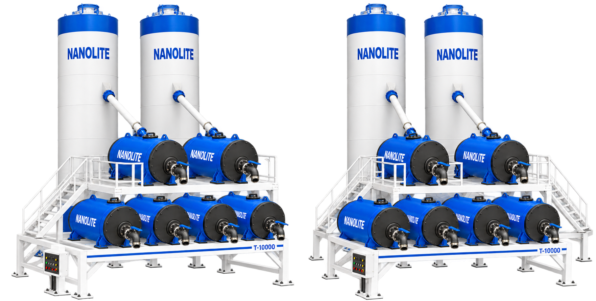
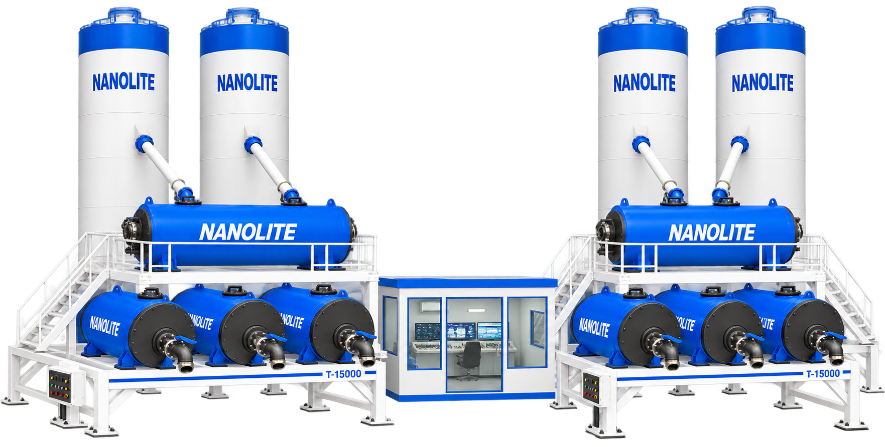
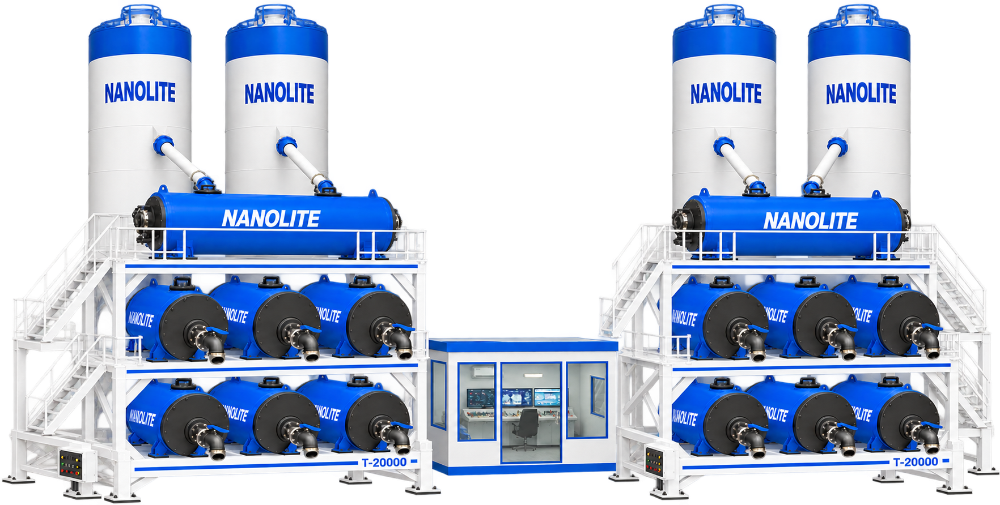

01 / Planning
Your site. Your system.
Review your available factory space, utilities, production objectives and target products with our engineering team.
Manufacturing / Partnership
Your market. Your manufacturing journey. Nanolite by your side.
A partnership built around production
Explore cellular lightweight concrete production with Nanolite. Our team works with you on equipment selection, factory planning, production requirements and implementation.
Discuss your plans01 / Planning
Review your available factory space, utilities, production objectives and target products with our engineering team.
02 / Production
Select a T-series configuration and discuss material storage, batching, mixing, moulds and handling requirements.
03 / Support
Confirm commissioning, operator training, production guidance and after-sales assistance in your project proposal.
Our network / Your next location
Nanolite’s plant network spans multiple locations across Pakistan and the UAE. As we expand into the USA, our franchise approach brings machinery, material supply and production support into one coordinated operation.
Manufacturing locations and local teams support lightweight concrete production, material supply and partner coordination.
Our UAE presence connects production planning, material requirements and regional construction opportunities.
We are expanding into the USA. Discuss location availability, market requirements and the proposed scope of a new operation with our team.
The materials behind your production
Nanolite supplies franchise partners with ReadyMix and foaming agent for cellular lightweight concrete production. Material specifications, quantities, ordering schedules and delivery arrangements are agreed around your plant and production plan.

A bagged dry mix for preparing CLC slurry, used with the agreed water ratio, foaming agent and production method.

Used to generate the foam introduced into the slurry. Dosing, dilution and mixing controls are established for your production configuration.
A coordinated franchise system
A franchise combines your local operation with Nanolite’s machinery, material supply and technical guidance. The owner and plant team manage the facility; Nanolite coordinates the agreed equipment, material requirements and support.
Coordinate material requests and production records through the Nanolite app. Dashboard access is assigned by the Nanolite team according to your role.
Equipment, investment, supply and support arrangements are confirmed in the franchise proposal. The website does not promise a fixed investment return.
Inside the production layout
A closer look at the supplied T-20000 layout: nominal production of 20,000 blocks per day, with 100-ton capacity per silo.

1 · Silos: 100 tons each2 · Slurry preparation3 · Mixing modules4 · Control cabin5 · Moulds & rail system6 · Cutting machine123456Explore equipment configurations with our team. Nominal daily outputs are shown below. Actual output depends on block dimensions, mix, shift length, curing and handling. Investment is quoted for your agreed configuration.
Manual / CLC manufacturing
500 blocks per day · nominal output
The T-500 Plant uses manual production for cellular lightweight concrete, with a nominal output of 500 blocks per day. The configuration combines slurry and foam mixing with block moulds, without a cutting machine or bulk silos.

Manual / CLC manufacturing
1,000 blocks per day · nominal output
The T-1000 Plant uses manual production for cellular lightweight concrete, with a nominal output of 1,000 blocks per day. The configuration combines slurry and foam mixing with battery moulds, without a cutting machine or bulk silos.

Semi-automatic / CLC manufacturing
5,000 blocks per day · nominal output
The T-5000 Franchise uses semi-automatic production for cellular lightweight concrete, with a nominal output of 5,000 blocks per day. The configuration combines slurry and foam mixing with block moulds, a cutting machine and rail transport.

Automatic / CLC manufacturing
10,000 blocks per day · nominal output
The T-10000 Franchise uses automatic production for cellular lightweight concrete, with a nominal output of 10,000 blocks per day. The configuration combines bulk silos, slurry and foam mixing, moulds, a cutting machine and rail transport.

Fully automatic / CLC manufacturing
15,000 blocks per day · nominal output
The T-15000 Franchise uses fully automatic production for cellular lightweight concrete, with a nominal output of 15,000 blocks per day. The configuration combines bulk silos, slurry and foam mixing, moulds, a cutting machine and rail transport.

Fully automatic / CLC manufacturing
20,000 blocks per day · nominal output
The T-20000 Franchise uses fully automatic production for cellular lightweight concrete, with a nominal output of 20,000 blocks per day. The configuration combines bulk silos, slurry and foam mixing, moulds, a cutting machine and rail transport.

Tell us your location, target products, available site and intended start date.
Discuss equipment, layout, utilities, commercial terms and the proposed scope of support.
Coordinate civil works, electricity, water, material storage and production workflow.
Agree the installation process, trial production, operator training and ongoing assistance.
Share your project location, factory area, utility availability, target products, expected output and intended start date.
The team prepares a quotation for your agreed equipment and support scope. Site works, utilities, transport, taxes and working capital should be discussed separately.
Discuss your expansion goals during planning so that the proposed layout and configuration can be reviewed against future requirements.
Installation, commissioning, training and service terms are confirmed in the quotation and partnership documentation.
Tell us where you want to build and what you want to produce.
Talk to our team